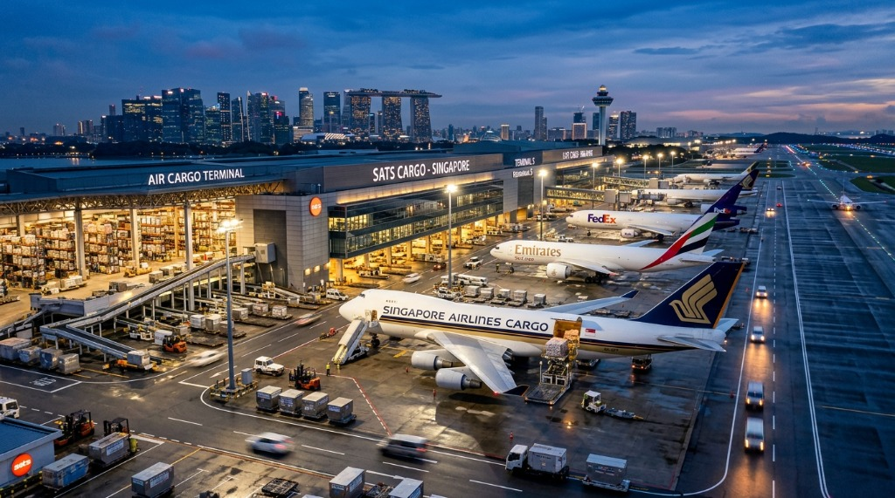
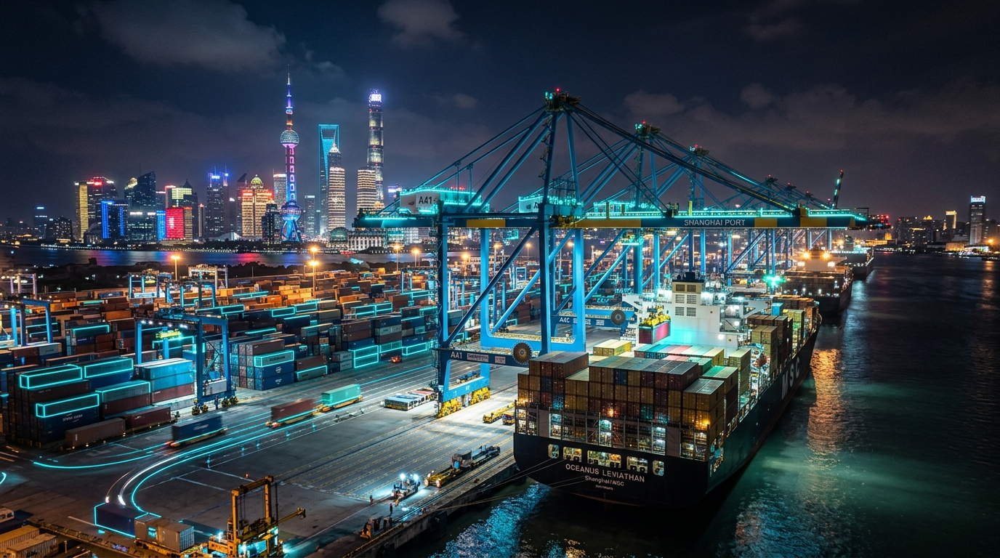
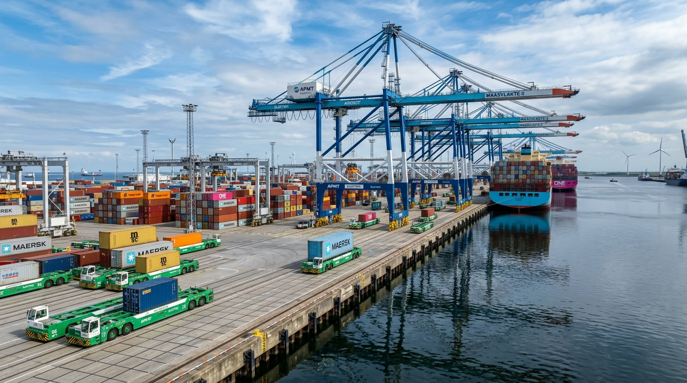
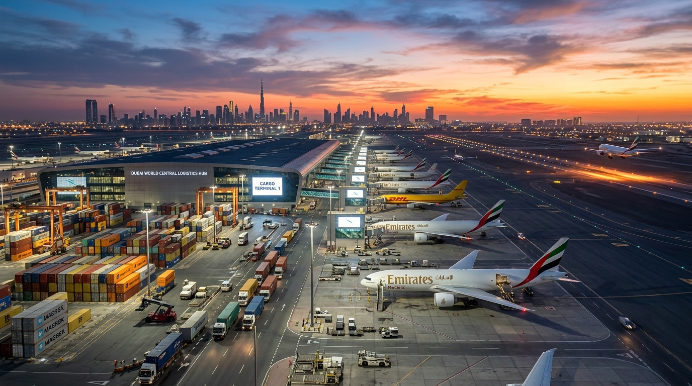

Orchestrating real-time cargo flows across 64 strategic international gateways, 38 airport logistics complexes, and 450+ ocean & air freight corridors backed by sub-second satellite telemetry.
Click on any hub node or category filter below to inspect terminal capacities, live vessel docks, weather radar, and customs clearance status in real time.

Primary international nerve center orchestrating satellite tracking, fleet management, and deepwater Pacific trade lanes.
Deep dive into our high-capacity deepwater ports, automated rail heads, and dedicated air express logistics complexes worldwide.
Our primary deepwater Pacific gateway featuring 30 automated gantry cranes, 100,000 sq.ft cold chain vaults, and direct transcontinental rail connectivity.

The world’s flagship automated container port utilizing zero-emission AGVs, AI berthing algorithms, and high-frequency transpacific express lines.

Europe’s principal deepwater port featuring green corridor berths, hydrogen refueling infrastructure, and specialized temperature vaults for bio-pharma.
Premier Southeast Asian sea-air transshipment center offering 4-hour express customs clearance and direct connectivity across Australasia.

Integrated sea-air logistics corridor linking East-West trade with 0% tax duty-free customs clearance and solar-powered cold storage.
Continuous satellite telemetry monitor tracking vessel speeds, container internal temperatures, port queue delays, and weather turbulence.
Select origin and destination hubs to calculate estimated transit velocity, sailing frequency, and CO2 emission savings.